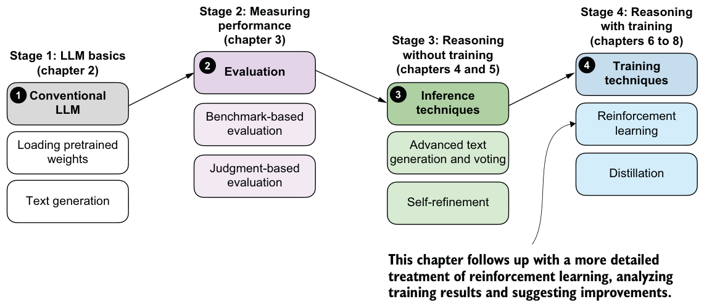
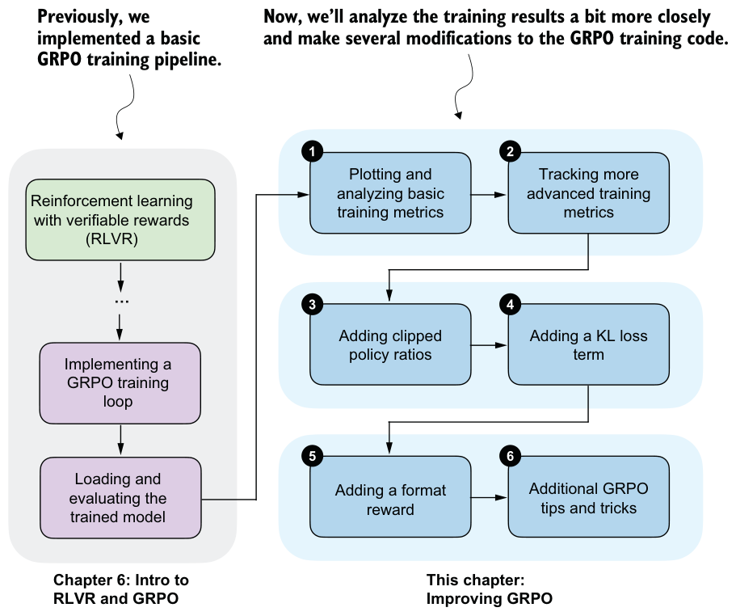

Summary
- Reinforcement learning (RL) can be used to train LLMs on human preference labels and verifiable rewards.
- RL is typically applied as post-training on top of a pretrained base model, and it can be inserted at different stages of an LLM pipeline, including reasoning training and preference tuning.
- RL with human feedback (RLHF) optimizes for human preferences via a two-stage setup: train a reward model from ranked responses, and then use reward scores to update the LLM.
- RL with verifiable rewards (RLVR) simplifies RLHF by replacing learned reward models with deterministic, automatically computed verifiers (for example, math answer checking).
- GRPO is a policy optimization algorithm that turns verifier rewards into parameter updates. Because GRPO directly optimizes the model using sequence-level rewards without requiring a separate value model, it is particularly convenient. GRPO is a more resource-friendly alternative to other RL algorithms for LLMs because it avoids training a separate value model and instead derives learning signals from comparisons within a group of sampled rollouts.
- A “rollout” refers to a full model answer (completion) for a prompt; rewards, advantages, and log probabilities are computed from the rollout in later steps. Rewards are computed by a verifier that grants a reward only if the final answer is both correct and extractable in a required format, like
"\boxed{}".
- Raw rewards are transformed into advantages by normalizing each rollout reward relative to the group mean and standard deviation.
- GRPO also relies on sequence-level log probabilities, which are computed by summing token log probabilities over the generated answer tokens.
- Sequence log probabilities, together with the advantages, form the core policy-gradient objective in GRPO.
- The full GRPO loss computation is combined into a single function that performs rollout sampling, reward computation, advantage calculation, log probability computation, and policy-gradient loss calculation.
- The surrounding training loop is a standard deep learning loop, with the key difference being that the loss comes from GRPO rather than conventional classification losses.
- Training is resource intensive because each step requires generating multiple, potentially long rollouts, but even short GRPO runs can increase MATH-500 accuracy from 15% to 47%.
Improving GRPO for reinforcement learning
This chapter covers
- Interpreting training curves and evaluation metrics
- Preventing the model from exploiting the reward signal
- Extending task-correctness rewards with additional response-formatting rewards
Previously, we implemented the GRPO algorithm for reinforcement learning with verifiable rewards (RLVR) from end to end. Now, as shown in figure 7.1, we’ll pick up from that baseline and focus on what happens when we run longer training.
In particular, we’ll discuss which metrics are worth tracking (beyond reward and accuracy), how to spot failure modes early, and why training can become unstable even when the code is “correct.” As it turns out, basic GRPO can lead to training instability, so this chapter also introduces practical GRPO extensions and fixes that are used in reasoning-model training.

7.1Improving GRPO
We implemented GRPO (Group Relative Policy Optimization) in the previous chapter; we’ll now revisit the training run and analyze it more thoroughly. We’ll also revisit the KL loss term that we omitted in the previous chapter and discuss some practical tips and algorithmic choices that become important in real training runs. These topics are summarized in the chapter overview in figure 7.2.
The examples in this chapter are based on actual experiments, but the results should be interpreted with care. To draw strong conclusions about the effect of individual settings, each experiment would need to be repeated multiple times and the results averaged, since randomness in sampling and optimization can lead to noticeable variation between runs. That said, the examples shown here are sufficient to illustrate the main ideas and the relevant tradeoffs.
7.2Tracking GRPO performance metrics
In chapter 6, we ran a short GRPO training loop and briefly examined the results. For example, the output of a short run was structured as follows:
[Step 1/50] loss=-0.0000 reward_avg=0.000 avg_resp_len=5.5
[Step 2/50] loss=-0.0000 reward_avg=0.000 avg_resp_len=6.8
[Step 3/50] loss=0.3592 reward_avg=0.250 avg_resp_len=7.8[Step 4/50] loss=2.7401 reward_avg=0.250 avg_resp_len=56.5
[Step 5/50] loss=3.3214 reward_avg=0.500 avg_resp_len=251.2
# ...
Let’s pick up from this point and discuss which metrics to track when training with GRPO, and how they can help interpret and debug training behavior.